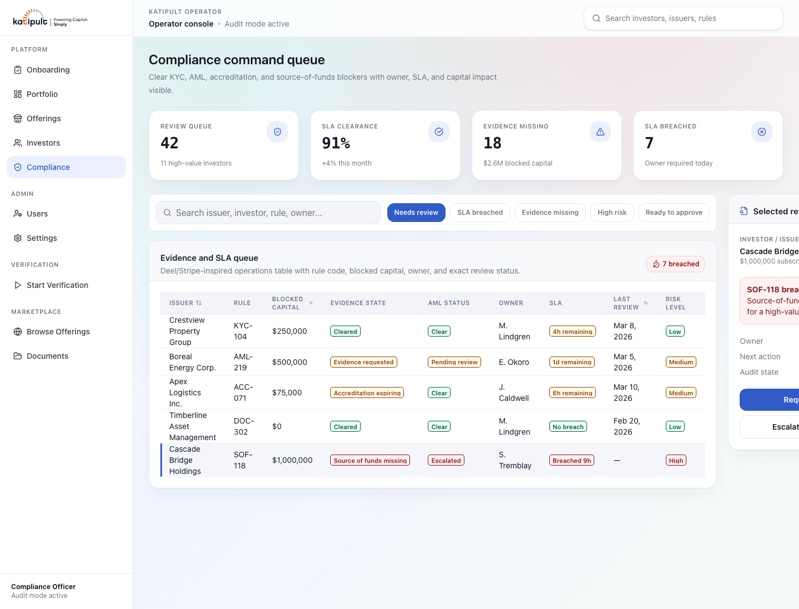
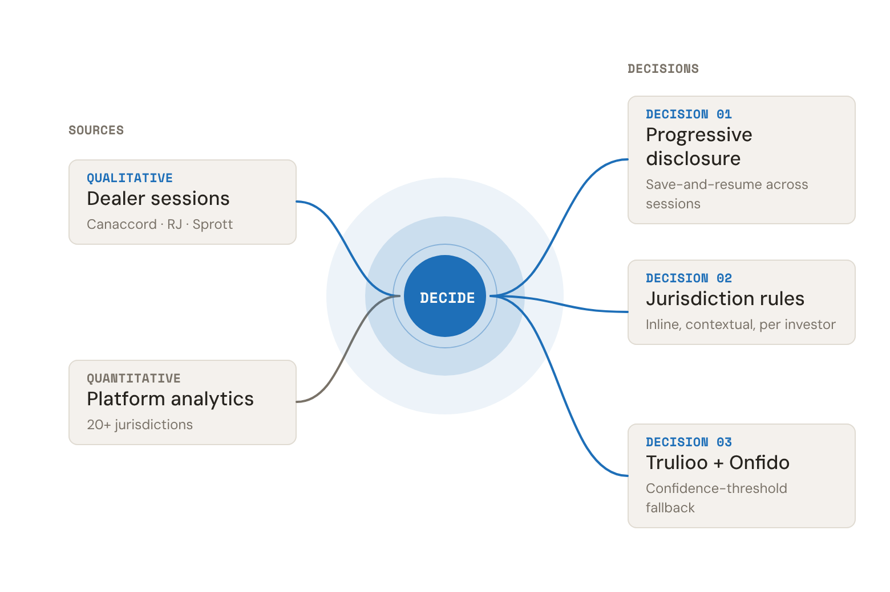
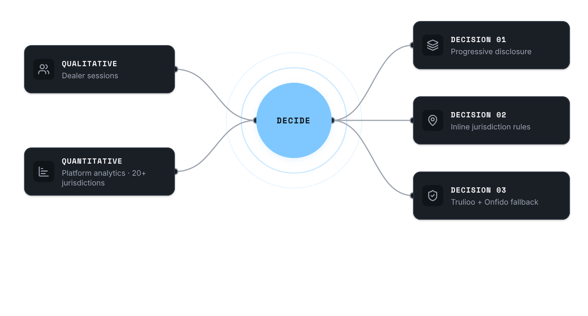
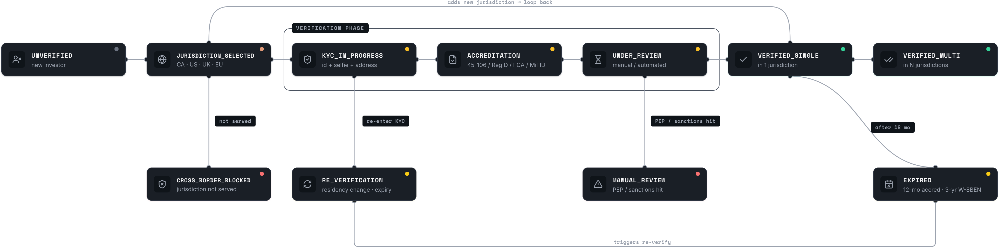
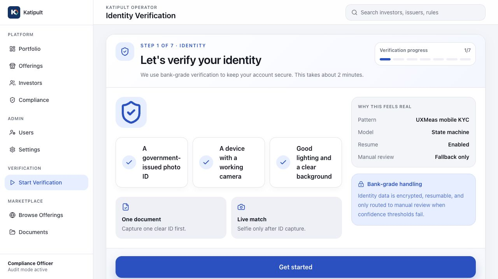
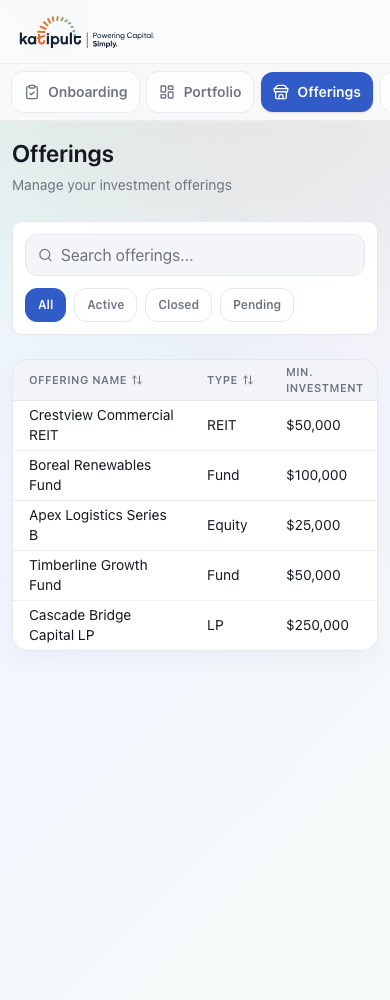

KYC that ships in 12 minutes.From 45.Across 20+ jurisdictions.
I redesigned investor onboarding using a product-led growth framework. A 45-minute paper trail collapsed into a 12-minute self-serve flow. Activation lifted 47% to 85%. Jurisdiction logic moved server-side. Wizards replaced with a state machine. Shipped to Canaccord, Raymond James, and Sprott across $2B+ in regulated transactions.
45 → 12 min
Time-to-value, cut by 73%
85%
Activation rate, up from 47%
150+
Offerings shipped, 20+ jurisdictions

Role
Head of Product Design
Timeline
2014 – 2025 (11 years)
Team
Founding designer → 30+ company 2 design reports
Clients
150+ institutional dealers incl. Canaccord Genuity, Raymond James, Sprott Capital
Founded the design practice and ran it solo for three years. As the company grew to 30+, design's role got built inside it — every investment defended in numbers the business already tracked: drop-off rates, audit risk, dealer churn. Owned the design system, the jurisdiction-rules engine, and the compliance dashboard. Kept the in-house team lean — 2 full-time designers (Prague, Serbia) + external designers brought in as projects required. By the time Markette acquired the company, design was reviewing every major release. Time to move on.
Jurisdiction-rules engine UX. 20+ regulatory states (IIROC, Reg CF, MiFID, FINTRAC) on one configuration surface.
Compliance-officer dashboard. Human-side governance that dropped NIGO submissions and let automation handle high-confidence cases.
State-machine pattern replacing the wizard. The load-bearing design lever; same engine later shipped to Lending and Donations & Rewards verticals.
Design system architecture. Component library used across 17 enterprise tenants. Kept the design practice lean: 2 full-time designers (Prague, Serbia) plus external designers brought in as projects required.
( 02 )Problem
Drop-off at document upload
60%
Before
45%
Overall completion improvement
15%
After
Higher conversionFaster completionReduced support
60% of investors abandoned at document upload.
Six to eight documents in one session, no save-and-resume. The same flow for a California accredited investor and a UK retail investor. Compliance officers had no dashboard view of who was stuck or why. The platform was processing private placements for top institutional dealers, but losing investors before they finished signing up.
Framework · PLG 120
A 120-day spine for product-led onboarding.
The work mapped to four phases. The same spine I'd use today on any regulated B2B onboarding redesign.
Days 0 to 30 · Discover
Designed the research protocol. Canaccord, Raymond James, and Sprott teams observed sessions with real investors on their floors and sent notes weekly. Pulled the funnel drop-off data in parallel. Same pattern from both sides: the activation wall was jurisdictional branching baked into the UI.
Days 31 to 60 · Architect
The team landed on modeling KYC as a state machine instead of a form. I designed the resulting surface: progressive disclosure, one decision per screen, the 6-document dump broken into single-question steps. Engineering moved jurisdiction logic server-side, which let me design one flow that adapts across IIROC, Reg CF, MiFID, and FINTRAC instead of four parallel flows.
Days 61 to 90 · Ship
Worked with PM and engineering on what to instrument so we could measure activation and TTV per step. Phased rollout to Canaccord first, then Raymond James, then Sprott. Same flow served every jurisdiction. No forks.
Days 91 to 120 · Measure
Activation 47% to 85%. TTV 45 to 12 min. NIGO submissions down 98%. The pattern reused across the Lending and Donations verticals.
( 03 )Approach
Two ways into the investor experience.
Investors didn't abandon because the process was hard. They abandoned because it gave them no information, no progress, and no way to pause.
I designed the research. The dealers ran it. Canaccord, Raymond James, and Sprott had daily access to real investors, so I set the protocol and their teams observed sessions on their floors. Their notes came back weekly. Platform drop-off analytics ran in parallel and confirmed the same patterns across every jurisdiction.
How might we
Cut investor onboarding from 45 minutes to 12 — without losing compliance across IIROC, Reg CF, MiFID, ISA, and FINTRAC.


( 04 )Decisions
KYC is a state machine, not a form.
Regulators think in states. Users think in steps. The product's job is to translate between the two.

Three trade-offs along the way.
Decision 01
Progressive disclosure with save-and-resume.
Was
6 to 8 documents on one screen, no pause, no progress signal.
Chose
One decision per screen. Persistent state. Return any time.
Because
Drop-off data: 60% abandoned mid-session. Investors needed permission to leave and finish later.
Decision 02
Contextual jurisdiction rules, not global settings.
Was
Rules buried in separate settings screens before reviewing investors.
Chose
Rules surfaced inline in the review interface, per investor's jurisdiction.
Because
Officers reviewing IIROC investors needed IIROC rules visible — not buried in a settings panel they had to navigate to.
Decision 03
Trulioo and Onfido with confidence-threshold fallbacks.
Was
Manual document review for 20+ country formats.
Chose
Automated identity verification. Manual fallback only when confidence scores failed.
Because
20x compliance team headcount wasn't feasible. Automate the high-confidence cases, route the rest to humans.

( 05 )Process
Three principles that shaped the shipped flow.
Moment 01
One decision per screen.
Residence, tax residence, and citizenship — three things investors kept getting wrong on a single form. Split them into three screens, one question each. Small enough to leave and come back to.
Moment 02
Focused capture, not a file picker.
Document upload as a single guided capture step instead of an 8-document dump. Viewfinder framing, clear progress, one document at a time. Investors stopped uploading the wrong file.

Moment 03
Pick, don't write.
Source-of-funds was free-text before -- investors wrote "savings", "work", "inheritance", and compliance had to interpret each one. Replaced it with a category pick. Evidence is only asked for when the category needs it.
( 06 )Final flows
Three screens that defined the system.
KYC Start Screen
The opening screen doesn't ask for anything. It explains what's needed, how long it takes, and what happens to the data before a single document is uploaded. Trust is established before compliance begins.
Compliance Dashboard
Compliance officers see every investor's exact status across every jurisdiction. Not just "complete" or "incomplete" but which step they're on, what's blocking them, when they last logged in, and which framework applies (IIROC, Reg CF, MiFID, ISA). Replaced a spreadsheet workflow that required manual chasing.
Operator Alert Surface
Compliance officers' triage view. Critical, High, Medium severity, with the regulator rule that fired, who owns it, and how long it's been sitting. The previous workflow was a Slack thread plus a spreadsheet — by the time you found the right investor, half the SLAs had blown. This replaced both, with an audit log attached to every action.
( 06.5 )Latest compliance and operator screens
Recent captures from the live operator surface: compliance command queue, identity verification dashboard, and mobile companion views.
Ran for 11 years across 20+ regulatory jurisdictions.
$2B+
Private capital processed on the platform
11 yrs
In production across institutional dealers
20+
Regulatory frameworks (IIROC, Reg CF, MiFID, ISA, FINTRAC, FCA…)
4 products
Same engine: Compliance, DealFlow, Lending, Donations & Rewards
NIGO (not-in-good-order) submissions dropped enough that ECM teams stopped chasing corrections and started closing deals. The compliance team grew slowly while investor volume kept climbing — automation handled the high-confidence cases, humans owned the exceptions.
The same engine eventually shipped to two sister products: Lending (Singapore, Mexico, UK, US deployments) and Donations & Rewards (InvestYYC + Alberta BoostR with Calgary Arts Development and ATB Financial).
( 08 )Reflection
What worked
Progressive disclosure reduced cognitive load in a domain where cognitive load directly costs money. The jurisdiction-aware rules engine is the feature compliance officers cite most often. Save-and-resume was the single biggest behavioral change — it turned a high-stakes single session into a returnable process. Trulioo and Onfido integration scaled identity verification across 20+ jurisdictions without a 20× headcount increase on the compliance team.
What to do differently
Mobile-first from day one. The platform was retrofitted for mobile years after desktop launch, creating layout debt that took multiple sprints to address. Earlier investor-side usability testing too — research relied heavily on compliance officer observation, and spending equal time with the end investors (not just the admins watching them) would have surfaced friction sooner.
Three takeaways. Compliance isn't a UX blocker. It's the brief. Wizards break when paths split. State machines don't. The people closest to users (dealers, compliance officers) know more than any lab. I use all three now. The same friction-audit and state-machine methodology applies to any regulated B2B onboarding. Legal SaaS, fintech, healthcare, insurance. Different jurisdiction, same shape of problem.
Up next · 02 / 04
Katipult
Three products. One engine. $2B+ in regulated transactions across 17 enterprise tenants and three product verticals — DealFlow, Lending, and Donations & Rewards.